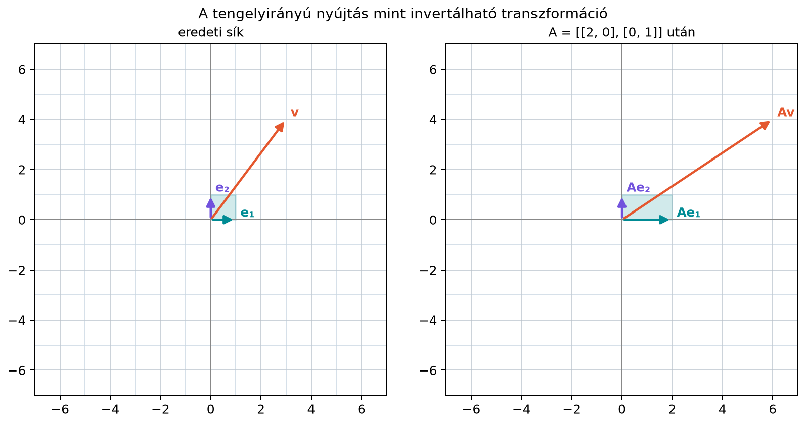

9.1 Az inverz mátrix:
visszafordítható transzformációk
9.1.1 Motiváció
Egy egyenlet megoldásánál az inverz művelet nagyon természetes: ha
,
akkor mindkét oldalt „leosztjuk” 3-mal, azaz megszorozzuk a
reciprokával. Mátrixoknál nincs osztás, de van egy hasonló kérdés: ha
egy
mátrixszal megszorzunk egy
vektort, és megkapjuk az
vektort, akkor meg tudjuk-e valahogy „csinálni vissza” a szorzást?
Vagyis van-e olyan
mátrix, amelyre
?
Ez a kérdés egyenletrendszereknél is előkerül. Ha az
rendszerben ismernénk egy olyan
mátrixot, amelyre
,
akkor mindkét oldalt balról
-vel
szorozva azonnal megkapnánk a megoldást:
Az ilyen
mátrixot hívjuk az
mátrix inverzének. Nem minden mátrixnak van inverze; ebben az
alfejezetben megvizsgáljuk, mikor létezik, és hogyan lehet
kiszámítani.
9.1.2 Szemléletes kép
Tekintsük az
mátrixot, amely az első koordinátát kétszeresére nyújtja, a másodikat
változatlanul hagyja. A síkbeli
vektorból így
lesz. Ezt természetesen vissza tudjuk csinálni: az első koordinátát
felezni kell. Az inverz transzformáció mátrixa
Ha előbb alkalmazzuk
-t,
utána
-et,
visszajutunk az eredeti vektorhoz:
Az inverz tehát geometriailag a transzformáció visszacsinálása.

A tengelyirányú nyújtás mint invertálható
transzformáció - Az A = ((2,0),(0,1)) mátrix az egységnégyzetet
vízszintesen kétszeresére nyújtja. Az inverz A^(-1) = ((1/2,0),(0,1))
ezt felezi vissza, ezért a két művelet egymás után az eredeti alakot
adja.
A fenti ábrán az
mátrix hatását látjuk: az egységnégyzetből vízszintesen kétszer olyan
széles téglalap lesz. Az inverz mátrix az első koordinátát felezi, tehát
a téglalapot visszaalakítja az eredeti négyzetté.
9.1.3 Definíció
Definíció. Legyen
egy
-es
mátrix. Ha létezik olyan
-es
mátrix, amelyre
akkor
-t
az
inverzének nevezzük, és
-gyel
jelöljük. Az ilyen
mátrixot invertálhatónak vagy más szóval
regulárisnak nevezzük. Ha ilyen
nem létezik, akkor
szinguláris.
Az inverz csak négyzetes mátrixra értelmezhető. Valóban, ha
-es
és
-es,
akkor
-es,
pedig
-es;
a két szorzat tehát különböző méretű is lehet. A kétoldali inverz mégis
-t
kényszerít ki:
miatt
,
míg
miatt
;
tehát
.
Téglalapmátrixnál legfeljebb egyoldali inverz lehetséges: ha
és
teljes oszloprangú, létezhet bal inverz
(),
ha pedig
és teljes sorrangú, jobb inverz
().
A gyakorlatban ezeket pszeudoinverzzel vagy legkisebb négyzetes
megoldással kezeljük. Az inverz, ha létezik, egyértelmű: ha
és
is inverze lenne
-nak,
akkor
Ezért nyugodtan beszélhetünk „az” inverzről.
9.1.4 A 2×2-es inverz képlete
Kis mátrixokra az inverzet közvetlen képlettel is megkaphatjuk.
Legyen
Keressük azt az
mátrixot, amelyre
.
Ezt a szorzást kifejtve
A szorzás szabálya szerint a következő négy egyenletet kapjuk:
Oldjuk meg az első két egyenletet
-re
és
-re.
Szorozzuk az elsőt
-vel,
a másodikat
-vel:
A második egyenletet az elsőből kivonva
,
tehát
Hasonlóan
,
és
.
Ezért ha
,
akkor
Az
kifejezés olyan fontos, hogy külön neve is van: a
-es
mátrix determinánsa. A determináns általános geometriai jelentését a
9.2. alfejezetben (A determináns geometriai
jelentése) vizsgáljuk meg. Ha
,
akkor a
-es
mátrixnak nincs inverze: ekkor a fenti levezetés egyenleteiből (például
)
rendre
,
,
és
következne, a nullmátrixszal szorozva viszont sohasem kaphatunk
egységmátrixot.
Nagyobb mátrixokra az inverzet a Gauss–Jordan-módszerrel számítjuk. A
módszer lényege: írjuk fel az
mátrix mellé az
egységmátrixot egy széles táblázatba, majd elemi sorműveletekkel
alakítsuk át a bal oldalt egységmátrixszá. Ami eközben a jobb oldalon
keletkezik, az éppen
lesz. Ezt így jelöljük:
Legyen
A kiindulási kibővített mátrix, ahol a jobb oldali három oszlop az
egységmátrix:
Először a második sorból vonjuk ki az első sort, a harmadikból pedig
az első sor kétszeresét:
Ekkor
Most a harmadik sorból vonjuk ki a második sort:
így
A bal oldal már lépcsős alakú. A Gauss–Jordan-módszerben a pivotok
fölött is kinullázzuk az elemeket. A második sorból vonjuk ki a harmadik
sort:
tehát
Most az első sorból vonjuk ki a második sort:
így
Végül az első sorból vonjuk ki a harmadik sort:
amivel a bal oldal egységmátrix:
A jobb oldalon tehát megkaptuk az inverzet:
Ellenőrizzük szorzással:
9.1.6 Az inverz tulajdonságai
Az inverz két fontos szabálya közvetlenül következik a mátrixszorzás
tulajdonságaiból.
Állítás. Ha
és
azonos méretű invertálható mátrixok, akkor a
szorzat is invertálható, és
Bizonyítás. Azt kell megmutatnunk, hogy a jobb
oldali kifejezéssel mindkét irányból szorozva egységmátrixot kapunk.
Valóban,
és hasonlóan
A szabály olyan, mint a zokni és a cipő fel- és levétele: ha előbb
zoknit, majd cipőt húzunk, akkor levételnél előbb a cipőt, aztán a
zoknit vesszük le. A sorrend tehát megfordul.
Állítás. Ha
invertálható, akkor
is invertálható, és
Bizonyítás. A transzponálás szabálya szerint
,
ezért
Hasonlóan
,
tehát
valóban az
inverze.
9.1.7 Mikor nincs inverz?
Nem minden mátrix invertálható. A legegyszerűbb példa a vetítés.
A
mátrix a sík minden pontját az
-tengelyre
vetíti: a
vektorból
lesz. Ez a művelet információt veszít, hiszen az
-koordináta
eltűnik. A
és a
vektor képe is ugyanaz a
vektor, ezért a képből nem lehet visszaállítani az eredeti vektort. Az
ilyen transzformációnak nem lehet inverze.
Ugyanez algebrailag is látszik: ha
invertálható lenne, akkor az
egyenletet balról
-gyel
szorozva azt kapnánk, hogy
.
Tehát invertálható mátrix esetén a nullvektor csak a nullvektorból jöhet
létre. A
mátrixnál viszont
vagyis egy nemnulla vektor képe nullvektor, ezért
nem invertálható.
Általában is igaz: ha egy négyzetes
mátrix oszlopai lineárisan összefüggők, akkor
szinguláris. Ilyenkor az oszlopok egyike kifejezhető a többiből, tehát a
transzformáció „összenyomja” a teret, és ez az információvesztés
megakadályozza az inverz létezését. Téglalapmátrixokra az inverz
és a szingularitás fogalma nem értelmezhető: egy
-es
mátrixot aszerint minősítünk, hogy mekkora a rangja. Ha az oszlopai
lineárisan összefüggők, akkor
,
azaz a mátrix nem teljes oszloprangú; ha a sorai
összefüggők, akkor nem teljes sorrangú. Teljes
oszloprangú csak
esetén lehet, teljes sorrangú csak
esetén; teljes rangú (azaz
)
mindkét esetben lehet. Ezek a minősítések akkor is értelmesek, ha a
mátrix nem négyzetes, és nem azonosak a négyzetes mátrixok
szingularitásával.
9.1.8 Gyakorlati szabály:
solve és nem inv
A gyakorlatban, ha egy
egyenletrendszert akarunk megoldani, akkor a NumPy-ban ne írjunk
ilyet:
x = np.linalg.inv(A) @ b
Ehelyett használjuk az erre szolgáló függvényt:
x = np.linalg.solve(A, b)
Ennek két oka van. Egyrészt az inverz kiszámítása körülbelül
háromszor annyi FLOP-ot igényel (nagyjából
FLOP), mint az egyenletrendszer LU-felbontással való megoldása
(nagyjából
FLOP), és utána még egy mátrix–vektor szorzás is következik. Másrészt a
solve általában kisebb kerekítési hibát halmoz fel. A
solve a korábban tanult (sorcserés) LU-felbontást
használja, amelyet a 8.4. alfejezetben (LU-felbontás: az elimináció mint mátrixszorzat)
ismertünk meg.
A_inv kerekítve:
[[ 2. -1. 0.]
[ 0. 2. -1.]
[-1. -1. 1.]]
A @ A_inv kerekítve:
[[1. 0. 0.]
[0. 1. 0.]
[0. 0. 1.]]
x = [1. 3. 2.]
A @ x = [ 6. 11. 19.]
A
megoldás valóban kielégíti az egyenletrendszert:
9.1.9 Tipikus hibák és
félreértések
A szorzat inverzénél rossz sorrend. Gyakori hiba
azt gondolni, hogy
.
A helyes sorrend
,
mert a műveleteket visszafelé kell lefejteni.
A
-es
képletben az
szorzó elhagyása. A képlet csak akkor adja az inverzet, ha a
mátrixot elosztjuk az
értékkel. Az
esetben pedig nincs inverz.
Nem négyzetes mátrixra inverz keresése. Az
inverz csak négyzetes mátrixra értelmezhető. Nem négyzetes mátrixokra
később, a 15.4. alfejezetben (Pszeudoinverz és
minimális normájú megoldás) vezetünk be egy általánosabb
fogalmat.
Egyenletrendszer megoldása inv-vel.
Bár matematikailag
helyes, numerikusan a np.linalg.solve(A, b) a gyorsabb és
pontosabb választás.
9.1.10 Feladatok
9.1.10.1 (a) Fogalmi kérdés
Igaz-e, hogy ha egy négyzetes mátrix oszlopai
lineárisan összefüggők, akkor a mátrix biztosan szinguláris? Indokold
egy mondatban. Hogyan módosul a kérdés egy
-es
téglalapmátrixra, ahol inverzről nem beszélhetünk?
9.1.10.2 (b) Kézi számolás
Számold ki a
mátrix inverzét, majd szorzással ellenőrizd.
9.1.10.3 (c) NumPy-feladat
Oldd meg a
egyenletrendszert np.linalg.solve segítségével. Add meg
a kapott
vektort, és ellenőrizd, hogy
valóban
.
9.1.10.4 (d) Gondolkodtató
feladat
A
mátrix az
-tengelyre
vetít. Adj meg két különböző vektort, amelyeknek ugyanaz a
-beli
képük, és ebből indokold, miért nem lehet
-nek
inverze.
9.1.11 Megoldások
9.1.11.1 (a)
Igen, négyzetes mátrixra. Ha az oszlopok lineárisan
összefüggők, akkor létezik olyan nemnulla
vektor, amelyre
.
Ha
invertálható lenne, akkor
alapján
következne, ami ellentmondás. Ezért az oszlopok összefüggősége kizárja
az invertálhatóságot. Téglalapmátrixra az állítás megfelelője: az
összefüggő oszlopok azt jelentik, hogy a rang kisebb az oszlopok
számánál, azaz a mátrix nem teljes oszloprangú; ilyenkor inverzről nem
beszélünk. Például az
-es
mátrix teljes sorrangú (a rangja
,
ami egyenlő a sorok számával), bár az oszlopai összefüggők, ezért nem
minősítjük ugyanúgy, mint egy szinguláris
-es
mátrixot.
9.1.11.2 (b)
Itt
,
,
,
,
tehát
.
A képlet szerint
Ellenőrzés:
9.1.11.3 (c)
A megoldás:
import numpy as npA = np.array([[4, 3], [3, 2]])b = np.array([5, 4])x = np.linalg.solve(A, b)print("x =", x)print("A @ x =", A @ x)
Várt kimenet:
x = [ 2. -1.]
A @ x = [5. 4.]
9.1.11.4 (d)
Például
Mindkettő képe
Ha
-nek
lenne inverze, akkor a
egyenlőségből balról
-gyel
szorozva
következne, ami nem igaz. Ezért
szinguláris.
9.1.12 Rövid összefoglaló
Az
négyzetes mátrix inverze az az
mátrix, amelyre
.
Az inverz geometriailag a transzformáció visszacsinálása. Nem minden
mátrix invertálható: ha egy mátrix összefüggő oszlopokkal rendelkezik,
akkor a transzformáció információt veszít, és nincs inverz. Az inverzet
kis méretben képlettel, nagyobb méretben Gauss–Jordan-módszerrel
számíthatjuk. Két szorzat inverzére
,
transzponáltra pedig
.
Egyenletrendszerek numerikus megoldására az inverz helyett a stabilabb
solve módszert érdemes használni.